Fișa din sertar
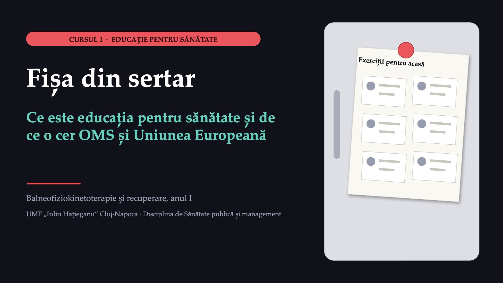
1 / 46Trei povești, o pauză, trei întrebări la final
![HARTA ȘEDINȚEI ȘI EVALUAREA Trei povești, o pauză, trei întrebări la final Fișa din sertar Știu, pot, am unde, vreau Pauză De la o pacientă la un cartier OMS și UE Kahoot Trei termeni noi: educația pentru sănătate · capacitate, oportunitate, motivație · abordarea populațională. Jumătate din timp lucrați voi: vot pe telefon, discuții cu colegul de bancă, un joc de rol, tabere, Kahoot. Cum sunteți evaluați Cursul: examen tip grilă, 60% din nota finală. Lucrările practice: examen tip grilă, 30%, și prezentarea unui plan de educație pentru sănătate, 10%. Votul, discuțiile, jocul de rol, Kahoot-ul și întrebările de la final nu se notează. Suportul de curs: notele de pe site.](diapozitive/C01/002.jpg) 2 / 46
2 / 46Doamna Elena, șaptezeci și patru de ani
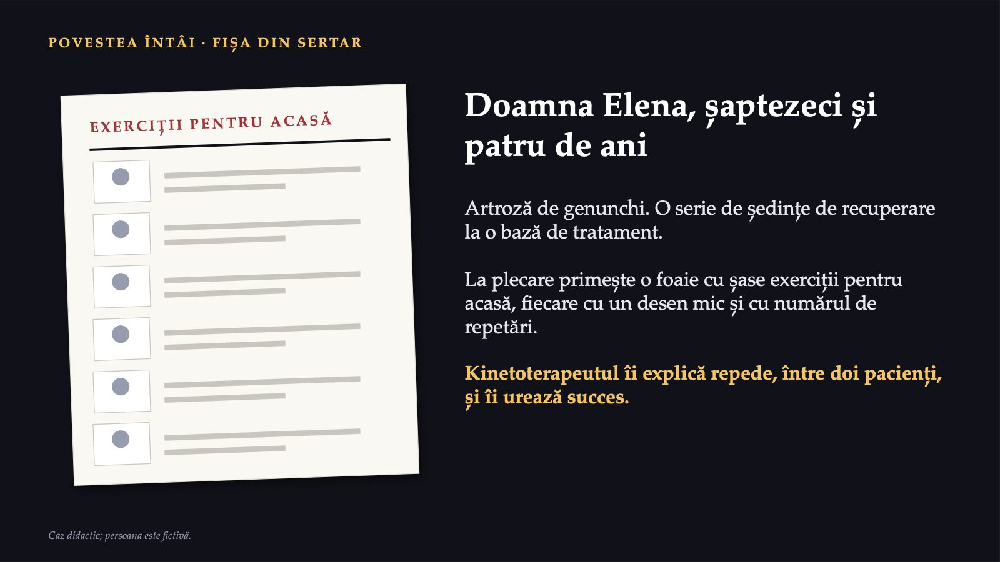
3 / 46Genunchiul o doare din nou
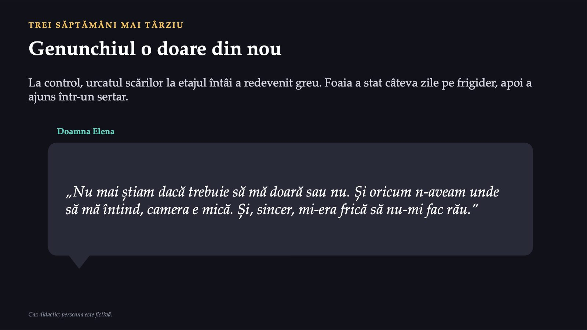
4 / 46De ce a ajuns foaia în sertar?
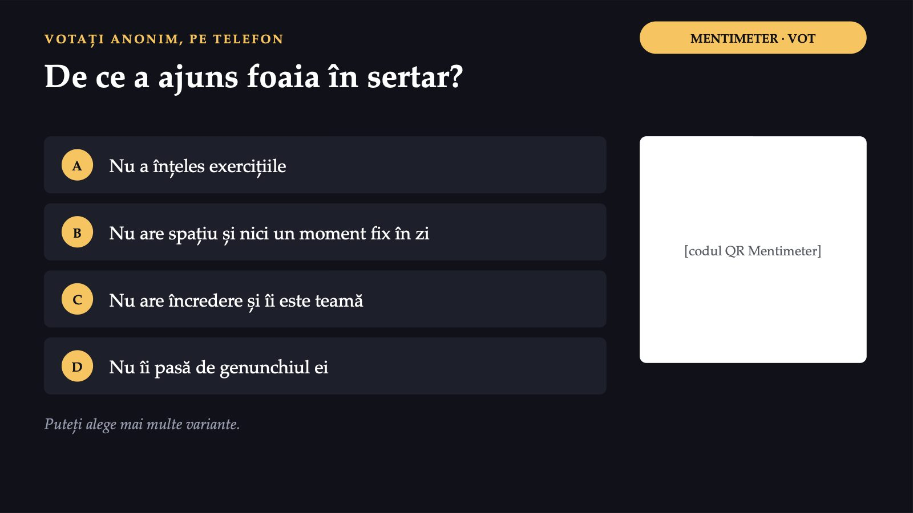
5 / 46Ce trebuia să se întâmple la plecare?
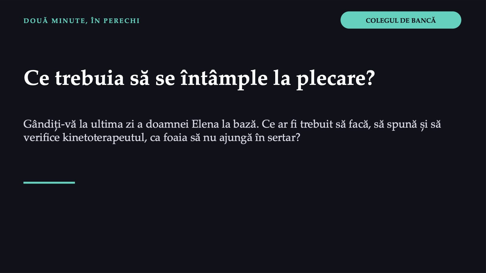
6 / 46I s-a dat o informație. Nu i s-a predat un obicei.
![UN RĂSPUNS PROVIZORIU I s-a dat o informație. Nu i s-a predat un obicei. Ce nu poate da o foaie, singură: Să fie înțeleasă și exersată Nu știa cât de tare are voie să o doară. Un loc și un moment în viața ei Nu avea unde să se întindă. Să fie dorită Îi era teamă să nu-și facă rău. De ce o cer OMS și Uniunea Europeană Populația îmbătrânește și tot mai mulți oameni trăiesc cu boli de lungă durată; de aceea OMS tratează recuperarea ca prioritate. O mare parte a sănătății se joacă acasă, nu în cabinet.](diapozitive/C01/007.jpg) 7 / 46
7 / 46Educația pentru sănătate
 8 / 46
8 / 46Trei cuvinte care contează
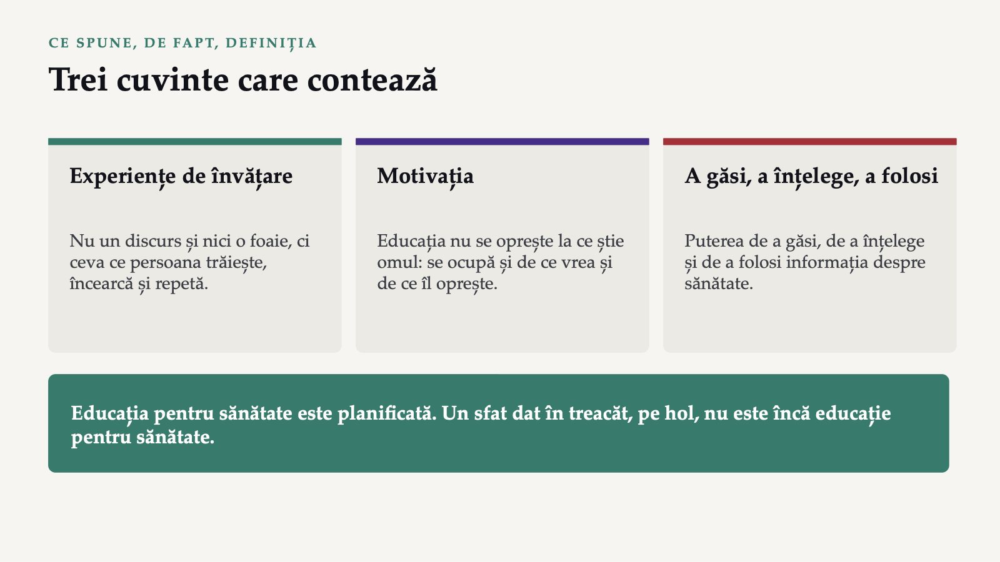
9 / 46Informarea și educația, una lângă alta
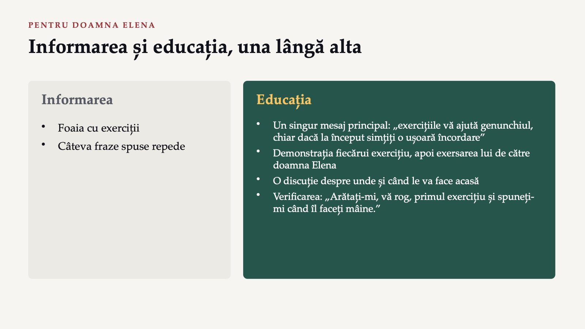
10 / 46Pacientul programat la rezonanța magnetică
 11 / 46
11 / 46Traseul din parc și lecția despre traseu
![DOUĂ EXPRESII, NU UNA Traseul din parc și lecția despre traseu Promovarea sănătății legile · mediul · serviciile · comunitatea Educația pentru sănătate: învățarea Carta de la Ottawa, 1986: promovarea sănătății este procesul prin care oamenii devin capabili să dobândească un control mai mare asupra sănătății lor și să și-o îmbunătățească. Traseul marcat pentru mers în parc: promovarea sănătății. Lecția de zece minute despre cum mergeți pe traseu fără să vă suprasolicitați genunchii: educație pentru sănătate.](diapozitive/C01/012.jpg) 12 / 46
12 / 4631%
![ÎNTREBARE PENTRU SALĂ DE CE ARE NEVOIE PROFESIA VOASTRĂ 31% dintre adulții lumii, adică 1,8 miliarde de oameni, nu ating recomandarea de cel puțin 150 de minute de activitate fizică moderată pe săptămână (OMS, estimarea pentru 2022). Activitatea fizică ajută la prevenirea și tratamentul bolilor cardiovasculare, al cancerului și al diabetului și reduce simptomele depresiei și ale anxietății. Rolul vostru, în patru verbe Explicați simplu Arătați corect Adaptați la persoană Măsurați progresul Radiologie: femeia invitată la o mamografie de screening află la ce folosește examinarea; radioprotecția explică de ce se folosește un șorț de protecție.](diapozitive/C01/013.jpg) 13 / 46
13 / 46Șase principii pentru ședința doamnei Elena
![PRINCIPIILE DIN SALA DE RECUPERARE Șase principii pentru ședința doamnei Elena C Claritate O singură idee principală: „creștem treptat”. C Concret Cât și cum: câte repetări, câte minute de mers. P Practică Demonstrați, faceți împreună, corectați cu blândețe. V Verificare „Arătați-mi două repetări și spuneți-mi câte faceți mâine.” S Siguranță Un ritm în care puteți vorbi; vă opriți la o durere ascuțită. R Respect Lăudați efortul, nu perfecțiunea. Principiile sunt un mod de lucru al materialelor disciplinei, nu reguli dintr-un ghid oficial.](diapozitive/C01/014.jpg) 14 / 46
14 / 46Rescrieți instrucțiunea
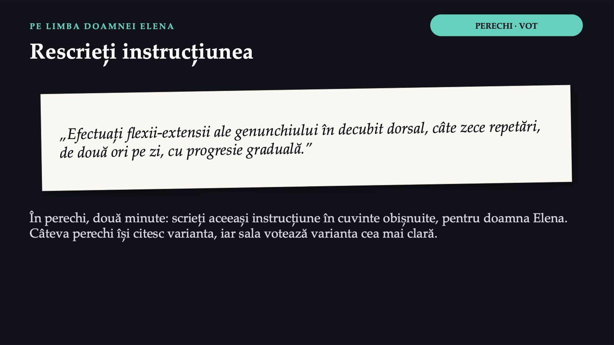
15 / 46Aceeași instrucțiune, în cuvinte obișnuite
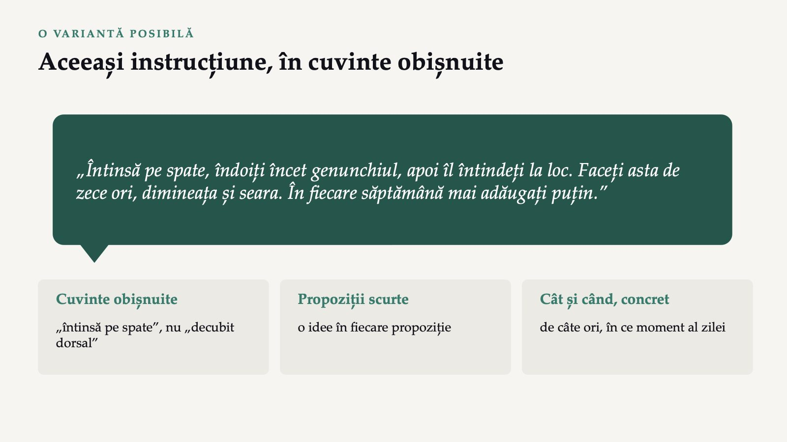
16 / 46Demonstrația, în cinci timpi
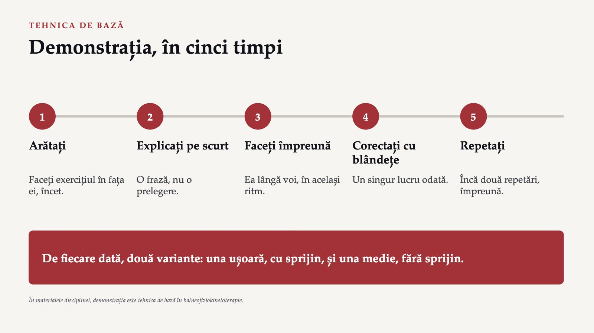
17 / 46Povestea, întrebarea, cuvântul simplu
![ALTE TREI UNELTE Povestea, întrebarea, cuvântul simplu Povestirea „O pacientă de vârsta dumneavoastră a reușit, după o lună, să urce fără oprire până la etajul ei.” Întrebările deschise „Cum ați face acasă?” · „Ce pas mic începeți mâine?” · „Ce v-ar putea opri și cum ocoliți piedica?” Limbajul simplu Propoziții scurte, cuvinte obișnuite: „să puteți urca un etaj fără să vă opriți”. Termenii de specialitate rămân pentru fișa medicală. Întrebările deschise scot la iveală piedicile pe care pacientul nu le spune singur.](diapozitive/C01/018.jpg) 18 / 46
18 / 46Verificați, apoi amintiți
![ÎNAINTE DE PLECARE ȘI DUPĂ Verificați, apoi amintiți Verificarea prin reformulare Nu întrebați „Ați înțeles?”. Cereți-i persoanei să spună cu cuvintele ei ce va face și să arate două repetări. Dacă apare o greșeală, corectați blând și mai faceți împreună două repetări. Mementoul Un mesaj la telefon, un afiș sau, pentru vârstnicii fără telefon mobil, un bilet în cutia poștală. Se trimite cu o zi înainte; după ședință, un mesaj scurt de încurajare. Mesaje Joi, la ora zece, sala școlii. Tema: pauzele de la statul pe scaun. Ținta: un sfert de oră de mers. Exemplu de memento](diapozitive/C01/019.jpg) 19 / 46
19 / 46Știu și pot. Am unde și când. Vreau.
![TERMENUL NOU 2 DIN 3 Știu și pot. Am unde și când. Vreau. Capacitatea „Știu și pot să fac.” Instrucțiuni simple, demonstrație, o foaie de o pagină, două variante ale fiecărui exercițiu. Oportunitatea „Am unde și când să fac.” Sală sau parc, orar fix, traseu marcat, bănci, un memento la telefon. Motivația „Vreau să fac.” Ținte mici, laudă pentru efort, perechi de sprijin, un panou cu progresul grupului. Când un comportament nu apare, căutați întâi condiția care lipsește și interveniți exact acolo. Capacitate, oportunitate, motivație: modelul COM-B, propus de Susan Michie și colaboratorii ei în 2011.](diapozitive/C01/020.jpg) 20 / 46
20 / 46Ce condiție îi lipsea doamnei Elena?
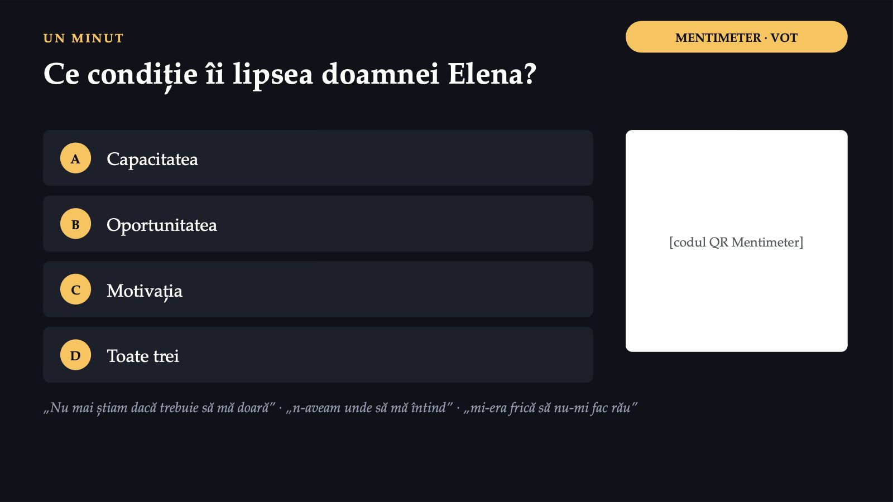
21 / 46Lipseau toate trei. Fiecare cere altă măsură.
![DIAGNOSTICUL CAZULUI Lipseau toate trei. Fiecare cere altă măsură. ✓ Capacitatea Nu știa cât de tare are voie să o doară. Exersarea fiecărui exercițiu în sală: o încordare ușoară este normală, o durere ascuțită nu. ✓ Oportunitatea Nu avea loc să se întindă. Două exerciții pe scaun sau lângă un blat, legate de un moment fix: după cafeaua de dimineață. ✓ Motivația Îi era teamă. O țintă mică pentru prima săptămână și un telefon scurt la mijlocul ei. Nu tratați „lipsa de voință” acolo unde lipsește, de fapt, spațiul.](diapozitive/C01/022.jpg) 22 / 46
22 / 46Ridicarea de pe scaun, la ultima ședință
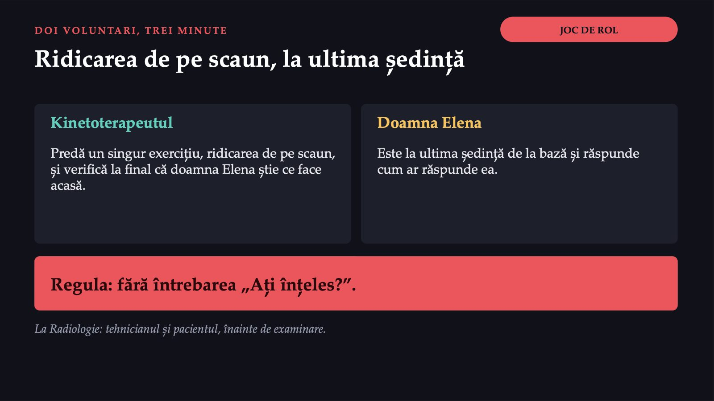
23 / 46A fost făcută verificarea?
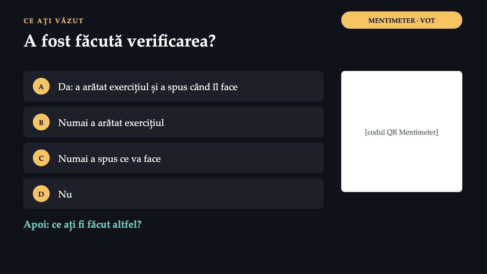
24 / 46Două părți: persoana arată și persoana spune
 25 / 46
25 / 46O ședință de grup de 45–60 de minute
![PLANIFICAREA O ședință de grup de 45–60 de minute VALORI IPOTETICE 5–8 min 25–30 min 10 min Verificarea scurtă (2–3 min): simptome noi, medicamente schimbate, „pot vorbi în propoziții” Încălzirea (5–8 min): mers pe loc, mobilizarea articulațiilor Exercițiile (25–30 min): forța picioarelor, echilibrul, mersul alert, cu variantă ușoară și medie Revenirea (5 min): mers lent, întinderi blânde Mini-lecția (10 min): o idee, trei pași concreți, verificarea prin reformulare Tema pentru acasă (1–2 min): o foaie de o pagină și o țintă mică Dozarea: creșteți cu 1–2 repetări sau cu 2–3 minute de mers pe săptămână; la o durere ascuțită sau la amețeală, treceți imediat la varianta ușoară. Valori ipotetice: un exemplu de organizare propus în materialele disciplinei, nu valori dintr-un ghid.](diapozitive/C01/026.jpg) 26 / 46
26 / 46„Mă doare.” Ce o întrebați și când opriți?
![COLEGUL DE BANCĂ SIGURANȚA ȘI ETICA „Mă doare.” Ce o întrebați și când opriți? Doamna Elena spune, la exercițiu, că o doare. Două minute cu colegul de bancă. Consimțământul Ce faceți, cât durează, ce riscuri mici există; persoana se poate opri oricând. Datele Numai ce e necesar; rezultatele se raportează fără nume. Semnele de oprire Durere în piept, lipsă severă de aer, amețeală puternică, durere ascuțită care nu cedează. Trimiterea la medic La orice semn de alarmă, persoana este îndrumată către medic. Semnele de oprire sunt o regulă de siguranță a materialelor disciplinei, nu un ghid clinic.](diapozitive/C01/027.jpg) 27 / 46
27 / 46La prima voastră practică
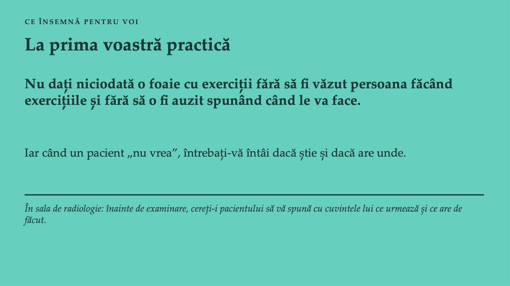
28 / 46Pauză
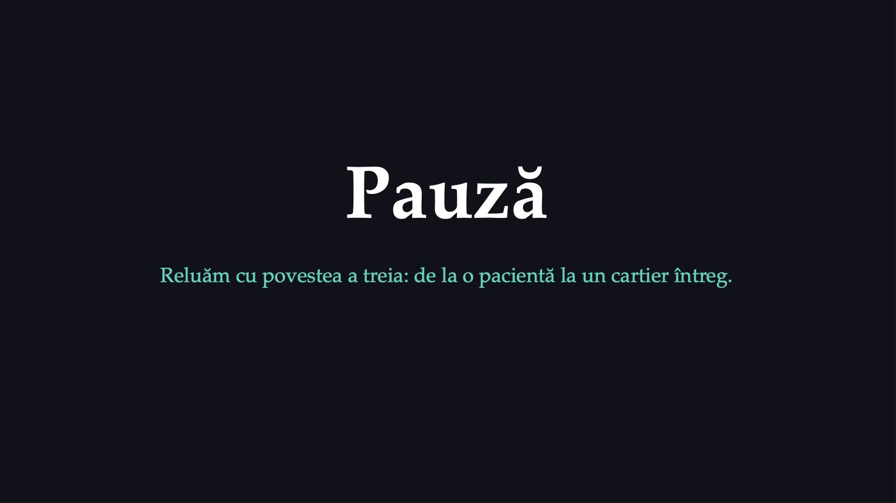
29 / 46Un cuvânt: ce o oprește pe o persoană de șaptezeci de ani din cartierul vostru să facă mișcare?
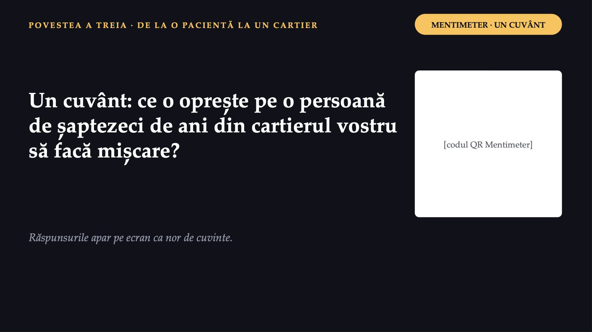
30 / 4685,5%
![ROMÂNIA, ÎN CIFRE 85,5% dintre adulții din România, de 18 ani și peste, declarau zero minute pe săptămână de activitate fizică aerobă în afara muncii. În Uniunea Europeană: 48,4%. Zero minute pe săptămână România 85,5% UE 48,4% 150 de minute sau mai mult România 7,1% UE 31,7% Cu asemenea cifre, a lucra numai cu pacientul din fața voastră înseamnă a ajunge la foarte puțini dintre cei care ar avea nevoie. Ancheta europeană de sănătate, 2019 (Eurostat). Activitatea fizică aerobă benefică pentru sănătate, în afara muncii, adulți de 18 ani și peste.](diapozitive/C01/031.jpg) 31 / 46
31 / 46Abordarea populațională
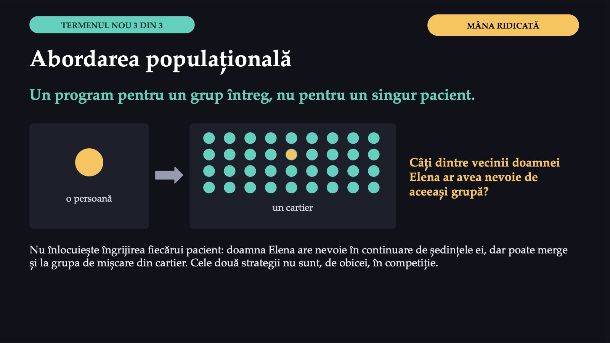
32 / 46Unu la unu, grupul, cartierul, afișul
![ÎNTREBARE PENTRU SALĂ PATRU FORME Unu la unu, grupul, cartierul, afișul Individuală Teamă mare de efort, mobilitate limitată, ieșire recentă din spital. Adaptare maximă; ajunge la puțini. De grup Aceeași temă: căderile, durerea de spate. Eficiență și motivație între colegi. Comunitară Un obicei la mulți: cluburi de mers, sala școlii, trasee marcate. Depinde de parteneri. Mesaje publice Afișe, bilete în cutia poștală, mesaje la telefon. Ieftine, dar fără învățare practică. Se combină: începutul unu la unu, exersarea în grup, obiceiul prin comunitate, reamintirea prin mesaje.](diapozitive/C01/033.jpg) 33 / 46
33 / 46Sala școlii, parcul, căminul cultural, acasă
![UNDE ȘI CU CINE Sala școlii, parcul, căminul cultural, acasă Sala școlii La parter, cu toaletă și bănci, cu program fix; pentru grupe mici. Parcul Alei plate, bănci din loc în loc, iluminat; pentru cluburile de mers. Satul Căminul cultural sau curtea școlii; o echipă mobilă o dată pe săptămână. Acasă Loc complementar: foi tipărite și un apel telefonic. Partenerii: primăria, școala, medicul de familie, biserica, organizațiile neguvernamentale. Ele asigură cheile, orarul și promovarea. Spațiul însuși educă: trotuare luminate, trasee cu bănci, afișe lângă lift care invită la urcatul scărilor.](diapozitive/C01/034.jpg) 34 / 46
34 / 46Patru programe pe măsura profesiei voastre
![VOT · COLEGUL DE BANCĂ PROGRAMELE Patru programe pe măsura profesiei voastre Căderile la vârstnici OMS, 2020: echilibru și forță, intensitate moderată sau mai mare, în 3 sau mai multe zile pe săptămână. Durerea de spate Aproximativ 619 milioane de oameni în 2020. Mișcare blândă, crescută treptat; OMS enumeră și ce previne noile episoade. O minte mai liniștită Activitatea fizică reduce simptomele depresiei și ale anxietății. Locul de muncă Micropauze active, întinderi la birou, scările în locul liftului. Ce program ar ajuta cel mai mult în cartierul vostru? Votați, apoi două minute cu colegul de bancă.](diapozitive/C01/035.jpg) 35 / 46
35 / 46Patru teste care încap într-o sală de grup
![TOATĂ SALA CUM MĂSURAȚI PROGRESUL Patru teste care încap într-o sală de grup 1 Ridicările de pe scaun Câte ridicări complete în 30 de secunde. 2 „Ridică-te și mergi” Se ridică, merge 3 metri, se întoarce și se așază; cronometrat. 3 Mersul de șase minute Distanța parcursă mergând timp de șase minute. 4 Pașii pe zi Media a șapte zile, cu telefonul sau cu un pedometru. Acum, de pe scaunul din amfiteatru: ridicări timp de 30 de secunde. Numărați-le. Cine nu poate sau nu vrea numără pentru colegul de alături.](diapozitive/C01/036.jpg) 36 / 46
36 / 46Douăsprezece săptămâni, trei etape
![UN PROGRAM PE ETAPE Douăsprezece săptămâni, trei etape VALORI IPOTETICE Săptămânile 1–4 Începem în siguranță 2–3 ședințe pe săptămână, de 45–60 de minute; tehnica corectă, mersul fără gâfâit. Ținta: 500 de pași în plus pe zi. Săptămânile 5–8 Consolidăm Cu 1–2 repetări sau cu 2–3 minute de mers în plus pe săptămână. Ținta: 1 000 de pași în plus pe zi; testele se refac. Săptămânile 9–12 Autonomie Planul de întreținere pentru acasă și un club de mers pentru după program. Mini-lecția de zece minute, la fiecare ședință: ideea principală, de ce contează, ce faceți de mâine, verificarea pe loc. Valori ipotetice: un exemplu de planificare propus în materialele disciplinei, nu recomandări dintr-un ghid.](diapozitive/C01/037.jpg) 37 / 46
37 / 46Trebuie să faceți 10 000 de pași pe zi
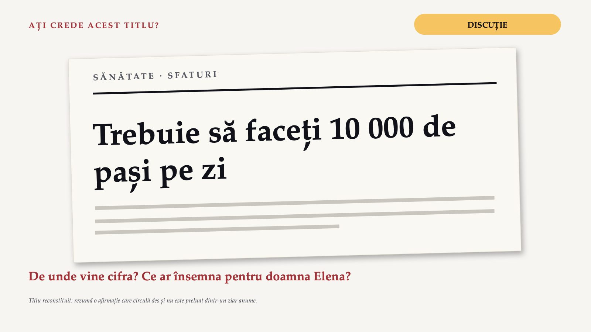
38 / 46„Trebuie să ajungeți la zece mii de pași.”
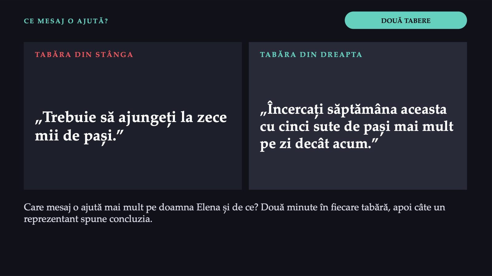
39 / 46Ce arată 15 grupuri de oameni urmăriți ani de zile
![CE ARATĂ DATELE Ce arată 15 grupuri de oameni urmăriți ani de zile riscul de deces pași pe zi 6 000 8 000 10 000 60 de ani și peste sub 60 de ani Schemă didactică; axa verticală nu are valori. Un studiu publicat în 2022 a reunit datele a 15 cohorte din mai multe țări. Riscul de deces a scăzut odată cu numărul de pași, până la aproximativ 6 000–8 000 de pași pe zi la 60 de ani și peste și 8 000–10 000 sub 60 de ani. O asociere, nu o cauză. Praguri de la care beneficiul nu mai crește vizibil, nu ținte obligatorii.](diapozitive/C01/040.jpg) 40 / 46
40 / 46Puneți documentele în ordine, de la cel mai vechi la cel mai nou
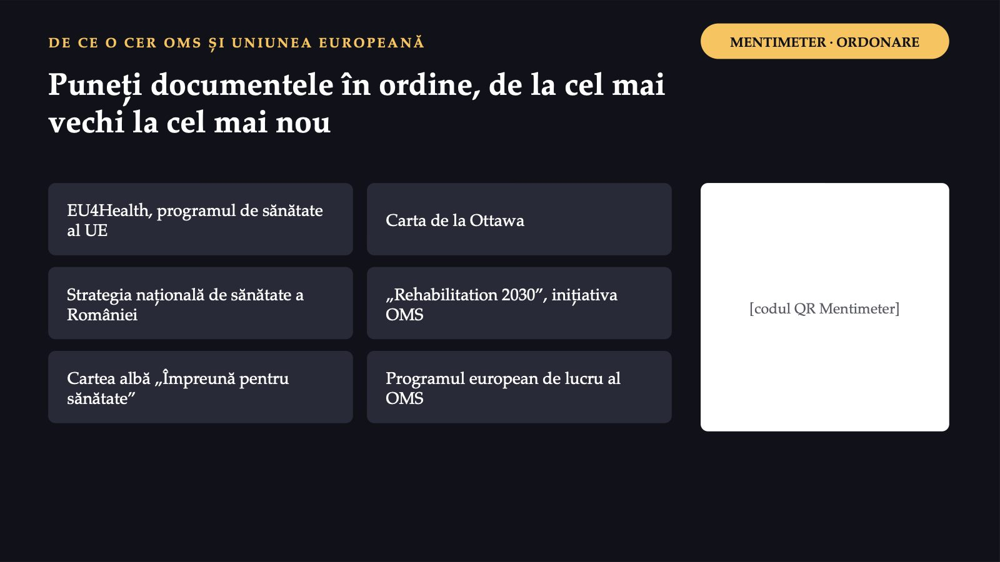
41 / 46De la Ottawa la programul OMS pentru 2026–2030
![PATRU DECENII, ACEEAȘI CERERE De la Ottawa la programul OMS pentru 2026–2030 1986 Carta de la Ottawa Promovarea sănătății; educația, una dintre căile ei. 2007 Cartea albă a UE Trei obiective; îmbătrânirea sănătoasă. 2017 Rehabilitation 2030 Recuperarea, prioritate a secolului XXI. 2020 Programul OMS Europa Comunități sănătoase, unde oamenii trăiesc bine. 2021 EU4Health Promovarea sănătății și prevenirea bolilor. 2023 România și OMS Strategia națională de sănătate; rezoluția OMS pentru recuperare. 2025 Programul OMS 2026–2030 Adoptat în unanimitate de 53 de state. Strategia națională despre România: educația pentru sănătate lipsește sau e furnizată „doar punctual sub forma unor mesaje de cele mai multe ori ambigue”. Strategia națională de sănătate 2023–2030, aprobată prin HG nr. 1004/2023. EU4Health: Regulamentul (UE) 2021/522.](diapozitive/C01/042.jpg) 42 / 46
42 / 46Ce document se aplică direct activității voastre de mâine?
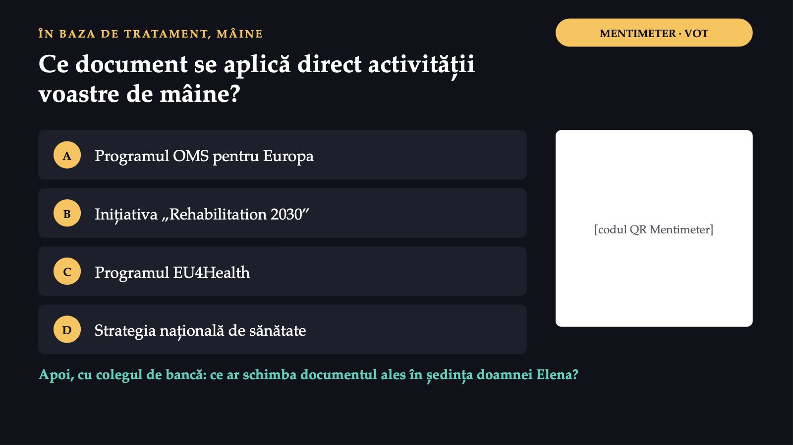
43 / 46Nu mai dați nicio foaie cu exerciții fără să fi văzut persoana făcând exercițiul și fără să o fi auzit spunând când îl face.
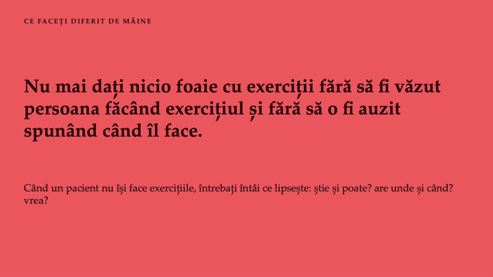
44 / 46Fișa, cele trei condiții, cartierul: zece întrebări
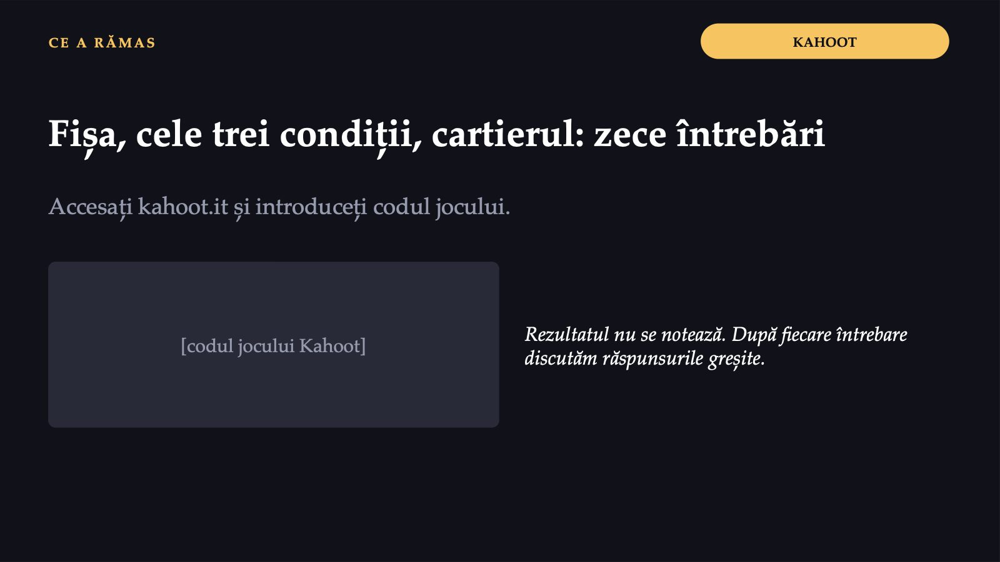
45 / 46Trei întrebări pentru final
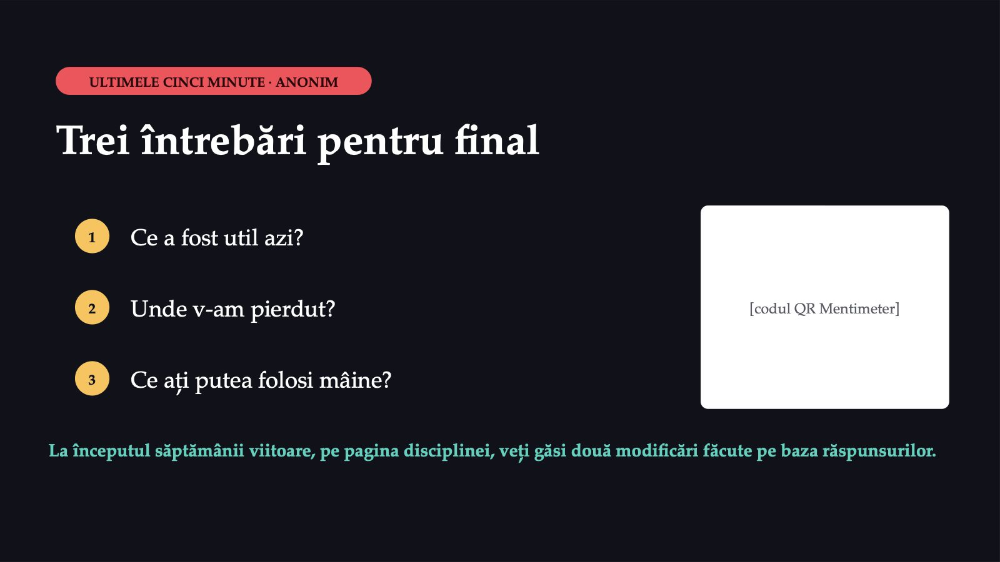
46 / 46Săgeți sau spațiu: navigare · O: vedere de ansamblu · N: notele prezentatorului · F: ecran complet · Esc: închidere